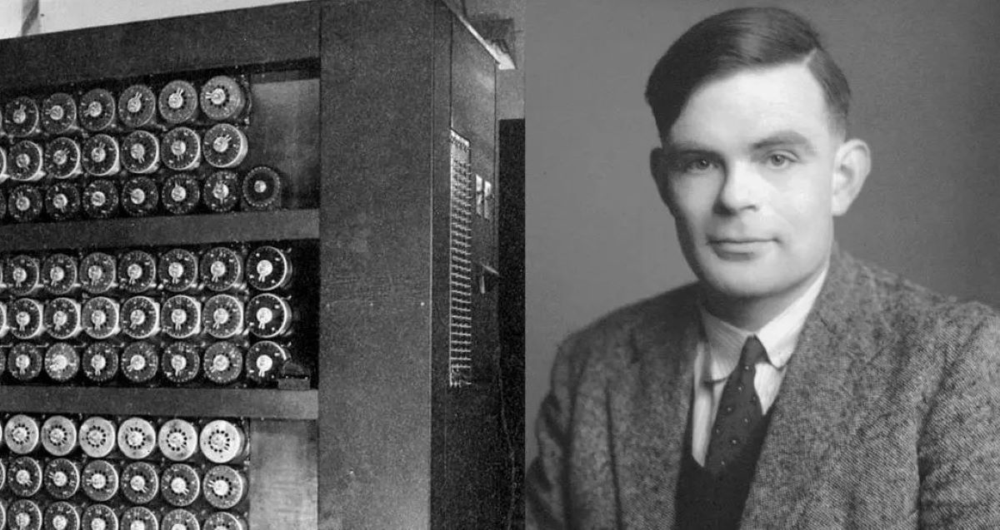

Definisi
Kecerdasan Buatan (AI) adalah bidang ilmu komputer yang dikhususkan untuk memecahkan masalah kognitif yang umumnya terkait dengan kecerdasan manusia,
seperti pembelajaran, penciptaan, dan pengenalan gambar. Organisasi modern mengumpulkan data dalam jumlah besar dari beragam sumber, seperti sensor pintar,
konten buatan manusia, alat pemantauan, dan log sistem. Tujuan menggunakan AI adalah untuk menciptakan sistem belajar mandiri yang memperoleh makna dari data.
Kemudian, AI dapat menerapkan pengetahuan tersebut untuk memecahkan masalah baru dengan cara layaknya yang dilakukan manusia. Misalnya, teknologi AI dapat
merespons percakapan manusia secara bermakna, membuat gambar dan teks asli, dan membuat keputusan berdasarkan input data waktu nyata. Organisasi Anda dapat
mengintegrasikan kemampuan AI dalam aplikasi Anda untuk mengoptimalkan proses bisnis, meningkatkan pengalaman pelanggan, dan mempercepat inovasi.
AI bekerja dengan cara belajar dari data. Data ini bisa berupa teks,
gambar, suara, atau bahkan kode program. AI kemudian menggunakan
pembelajaran mesin untuk mengidentifikasi pola dan membuat prediksi
tentang data baru. Semakin banyak data yang dipelajari AI, semakin
akurat prediksinya.
Sejarah

Sejarah kecerdasan buatan (AI) mencerminkan evolusi dan kemajuan yang luar biasa dalam upaya manusia untuk menciptakan mesin yang dapat berpikir,
belajar, dan bertindak mirip dengan manusia. Dimulai pada tahun 1950-an, ketika Alan Turing merumuskan Tes Turing sebagai landasan pemikiran,
AI telah melalui serangkaian tonggak penting.
Pada Dartmouth Conference tahun 1956, para tokoh seperti John McCarthy, Marvin Minsky, Nathaniel Rochester, dan Claude Shannon secara resmi
memperkenalkan konsep kecerdasan buatan. Ini menandai awal resmi lapangan AI dan menetapkan visi untuk membangun mesin yang cerdas.
Dalam dekade berikutnya, para peneliti mencapai beberapa pencapaian awal, termasuk pengembangan program-program seperti Logic Theorist dan
Perceptron. Namun, kemajuan terhenti sejenak pada 1970-an hingga awal 1980-an, yang dikenal sebagai "Krisis Kecerdasan Buatan", ketika harapan
terhadap kemampuan sistem AI menurun.
Namun, dengan berkembangnya sistem berbasis pengetahuan pada tahun 1980-an dan perkembangan pembelajaran mesin pada tahun 1980-an hingga 1990-an,
AI mengalami kebangkitan. Teknik-teknik seperti jaringan saraf tiruan dan pohon keputusan menjadi semakin populer.
Kota Bandung dialiri dua sungai utama, yaitu Sungai Cikapundung dan Sungai Citarum
beserta anak-anak sungainya yang pada umumnya mengalir ke arah selatan dan bertemu di
Sungai Citarum. Dengan kondisi yang demikian, Bandung selatan sangat rentan terhadap
masalah banjir terutama pada musim hujan.
Implementasi
Kecerdasan Buatan (AI) telah berkembang pesat dalam beberapa tahun terakhir, dan implementasinya dalam berbagai bidang telah
menunjukkan potensi besar untuk meningkatkan efisiensi, produktivitas, dan kualitas hidup.
Berikut adalah beberapa contoh implementasi AI yang sedang berlangsung:
FInansial :
1. AI digunakan untuk mendeteksi penipuan, mengelola risiko, dan memberikan layanan keuangan yang lebih personal kepada pelanggan.
2. Contohnya, AI digunakan untuk menganalisis transaksi keuangan untuk mendeteksi penipuan dan mencegah pencucian uang.
3. AI juga digunakan untuk mengembangkan robo-advisor yang dapat membantu pelanggan mengelola investasi mereka.
Kesehatan :
1. AI digunakan untuk mengembangkan obat baru, mendiagnosis penyakit, dan memberikan perawatan yang lebih personal kepada pasien.
2. Contohnya, AI digunakan untuk menganalisis gambar medis seperti X-ray dan MRI untuk membantu dokter mendiagnosis penyakit dengan lebih akurat.
3. AI juga digunakan untuk mengembangkan chatbot yang dapat membantu pasien mendapatkan informasi tentang kesehatan mereka dan mengelola janji temu mereka.